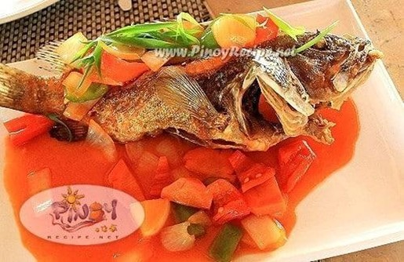

Fried Fish With Sweet and Sour Souce
What is Fried Fish With Sweet and Sour Souce?
Tinolang Isda or Fish in Ginger Broth is a type of Filipino clear soup dish wherein fish such as Tuna is cooked in a broth composed of ginger, lemongrass and other vegetables. It is a simple dish that can be enjoyed during dinner with the entire family.
Ingredients
1 Kilo Lapu-lapu Fish
1 1/2 cup Canola Oil (for deep frying)
1/3 cup white vinegar
6 tablespoons brown sugar
3 table spoons tomato ketchup
1/2 teaspoon salt
1 thumb-sized Ginger,sliced in strips
3 cloves garlic, minced
2 medium-sized onions, cut into 8 pieces
1 medium sized carrot, julienne
1/2 cup red and green pepper, sliced in strips
2 green onions, sliced for garnishing
2 tomatoes, cut in wedges
2 tablespoons cornstarch, diluted with 2-3 tablespoons water
Instructions / How to Cook
1. Clean the Lapu-lapu fish and remove the internals, make a diagonal slice on each side of the fish.
2. Then rub salt on it and inside the fish cavity.
3. Deep Fry the Lapu-lapu fish in a deep frying pan.
4. Once done, remove the fish from the pan and drain excess oil with paper towels.
5. Combine the vinegar, sugar, tomato ketchup, salt and ginger.
6. Add the cornstarch mixture then mix well.
7. Now add tomatoes, onions, carrot, tomatoes, garlic, red pepper and the other ingredients.
8. Boil once. Make sure the sauce is slightly thickened and not runny.
9. Pour the sauce on fried Lapu-lapu and serve immediately.
10. Garnish with green onions.